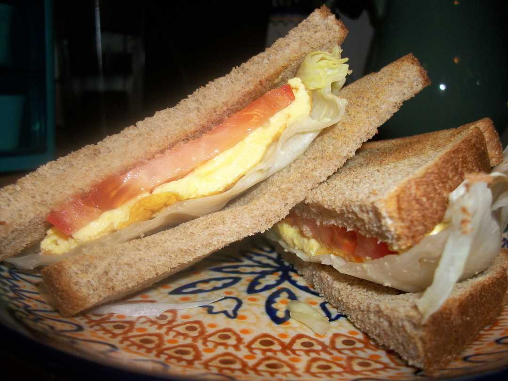

Breakfast Sandwich

Description
This is my spin on the classic Breakfast Sandwich. Hold the bacon and sausage, we're watching our saturated fat intake!
Ingredients
- 2 eggs (3 if you're really hungry)
- 2 slices of bread
- Butter lettuce
- Tomato slices
- Cheese (I like Boar's Head American Cheese)
- Mayo
Steps
- Cook your eggs how you like. Scrambled, over easy, medium, or -my personal favorite- over hard.
- Towards the end of cooking, place cheese slice one ggs so it melts.
- Toast your bread then spread mayo.
- Place lettuce on both slices of toast.
- Lay tomato on one toast slice.
- Place cooked eggs on the other slice.
- Smash it together and you've got yourself a breakfast sandwich!